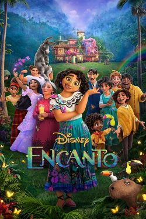
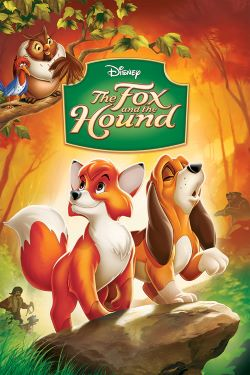

Rated 3.5/5 stars or higher
December 2021
- Encanto (2021) | 3.5 stars
- Spider-Man: No Way Home (2021) | 3.5 stars
December 2022
- Everything Everywhere All at Once (2022) | 3.5 stars
March 2023
- Cinnamon the Movie (2007) | 5 stars
April 2023
- The Fox and the Hound (1981) | 4 stars
May 2023
- How to Train Your Dragon (2010) | 4.5 stars
- Level 16 (2018) | 3.5 stars
- Wish Dragon (2021) | 3.5 stars
June 2023
- Hotel Transylvania (2012) | 3.5 stars
- Hotel Transylvania 2 (2015) | 3.5 stars
- Surf's Up (2007) | 3.5 stars
- The Lego Movie (2014) | 4 stars
- Puss in Boots (2011) | 3.5 stars
- The Croods (2013) | 3.5 stars
July 2023
- Hotel Transylvania 3: Summer Vacation (2018) | 3.5 stars
- Shrek (2001) | 3.5 stars
- Puss in Boots: The Last Wish (2022) | 4 stars
- Shrek 2 (2004) | 3.5 stars
August 2023
- Sonic the Hedgehog (2020) | 4 stars
September 2023
- How to Train Your Dragon 2 (2014) | 4 stars
Most notable
Encanto
I had a brief obsession with this movie after I first watched it on Christmas of 2021. I decided I wanted to become more engaged as a movie watcher after seeing this. I might not be able to remember the plot now, but I watched this movie 4 times within a 2-week span. I bought the novel version of the movie and brought it to my college dorm but I have not read it yet.
Cinnamon the Movie
I watched this for the first time after trying to find cute content about the Sanrio character Cinnamoroll on YouTube. It turned out that this 43-minute movie is free to watch on YouTube. I really enjoyed it and wished that I had seen the movie during my childhood. I liked the themes of belonging and what family means. This was the first movie I watched with my girlfriend.
The Fox and the Hound
This was the second movie I watched with my girlfriend. This is one of her favorite childhood movies, and I enjoyed it a lot too. It made me really emotional at times. To me, it's a story of a strong friendship that survives the test of time and external factors that tried to get in the way. It's about choosing togetherness, connection, and forgiveness.
Level 16
I first saw a video summary of this movie on TikTok, but when I saw it while scrolling through Netflix, I decided to watch the entire thing. I wonder what it would be like to have watched the movie through without knowing about the big reveal at the end. It was generally eerie but I like movies like that: disturbing, but not shock-horror.